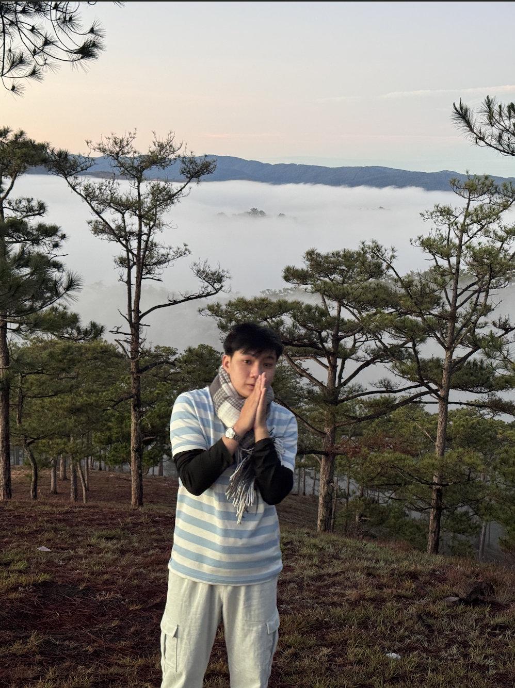

BACKEND DEVELOPER
PORTFOLIO
Tôi là Phan Việt Quan, hiện là sinh viên chuyên ngành Công nghệ thông tin tại Đại học Tôn Đức Thắng (TDTU). Định hướng cốt lõi của tôi là trở thành một kỹ sư Backend chuyên sâu, tập trung vào việc xây dựng các hệ thống có hiệu suất cao, khả năng mở rộng tốt và duy trì tính ổn định thông qua các quy trình phát triển phần mềm hiện đại.

1. GIỚI THIỆU CHUNG
Tôi là Phan Việt Quan, hiện là sinh viên chuyên ngành Công nghệ thông tin tại Đại học Tôn Đức Thắng (TDTU). Định hướng cốt lõi của tôi là trở thành một kỹ sư Backend chuyên sâu, tập trung vào việc xây dựng các hệ thống có hiệu suất cao, khả năng mở rộng tốt và duy trì tính ổn định thông qua các quy trình phát triển phần mềm hiện đại.
2. KỸ NĂNG CHUYÊN MÔN
Front-End Development: Tôi có nền tảng cơ bản về xây dựng giao diện người dùng, đảm bảo tính thẩm mỹ và khả năng tương tác tốt. Thành thạo HTML, CSS, JavaScript và ReactJS để xây dựng các trang web hiện đại. Có khả năng thiết kế giao diện (UI) đơn giản trên Figma và triển khai website nhanh chóng với WordPress.
Back-End Development: Đây là thế mạnh trọng tâm mà tôi đang tập trung phát triển và tối ưu hóa. Thành thạo PHP với Laravel Framework (Routing, Templating). Hệ sinh thái Python của tôi tập trung vào phát triển API hiệu năng cao và các ứng dụng web quy mô lớn với FastAPI và Django.
- Database Management: Có kinh nghiệm với MySQL và SQL Server, viết các truy vấn SQL cơ bản và tiếp tục nghiên cứu sâu về thiết kế, tối ưu hóa cơ sở dữ liệu phức tạp.
- Development Environment & Infrastructure: Sử dụng GitHub để quản lý mã nguồn, XAMPP và Docker để vận hành, kiểm thử ứng dụng local đồng nhất.
- Cloud Computing: Triển khai và quản trị dịch vụ trên nền tảng AWS.
3. DỰ ÁN & MỤC TIÊU
Với tinh thần kỷ luật và sự tỉ mỉ, tôi luôn cam kết tuân thủ nghiêm ngặt các tiêu chuẩn kỹ thuật trong mọi dự án mình tham gia. Mục tiêu của tôi là ứng dụng tối đa sức mạnh của Docker, AWS và các Backend Framework hiện đại để tạo ra những giải pháp phần mềm giá trị.
4. HỒ SƠ & LIÊN HỆ
Hồ sơ chi tiết: GitHub.com/PhanVietQuan
Liên hệ: phanvietquan299@gmail.com
5. KINH NGHIỆM THỰC CHIẾN
Trong hành trình phát triển nghề nghiệp, tôi đã có 3 tháng thực tập quý giá tại Công ty phần mềm Splus Software với vai trò Backend Developer Intern. Tại đây, tôi không chỉ áp dụng kiến thức lý thuyết vào môi trường doanh nghiệp thực tế mà còn trực tiếp tham gia vào các giai đoạn quan trọng của dự án.
- Xây dựng hệ thống: Trực tiếp tham gia thiết kế và phát triển các tính năng phía máy chủ, đảm bảo logic hệ thống vận hành chính xác.
- Đảm bảo chất lượng: Thực hiện kiểm soát và đánh giá đầu ra của các module để đáp ứng đúng yêu cầu nghiệp vụ và kỹ thuật của dự án.
- Tối ưu hóa: Nhận diện và xử lý các lỗi phát sinh trong quá trình vận hành, đồng thời đóng góp ý kiến để cải thiện hiệu suất hệ thống trong tương lai.
- Quy trình chuyên nghiệp: Làm việc trong môi trường yêu cầu tính kỷ luật cao, tuân thủ nghiêm ngặt các quy tắc về annotation và quản lý dữ liệu lớn.